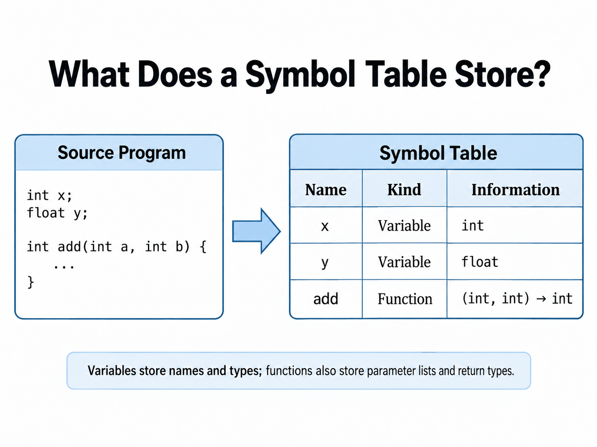
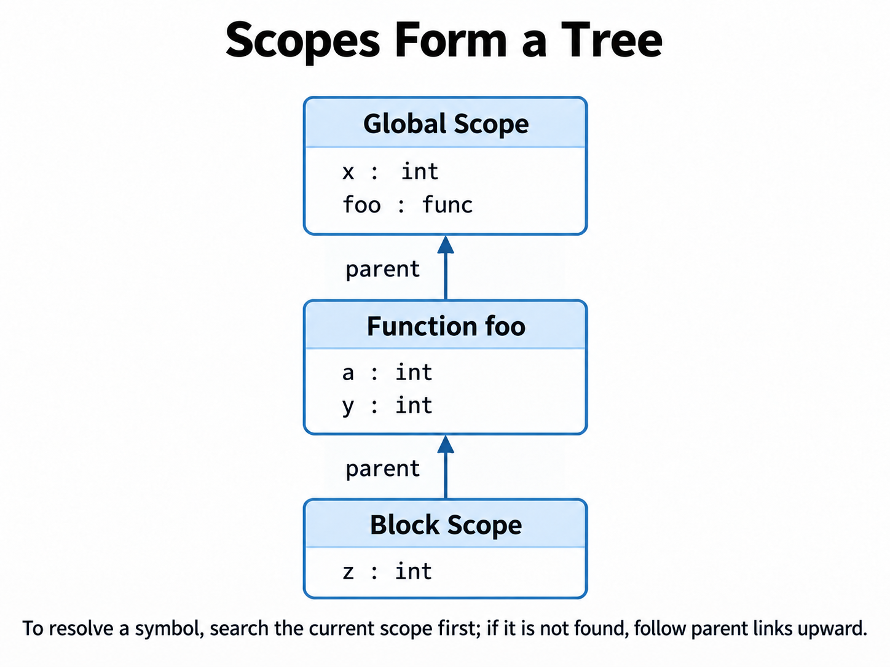
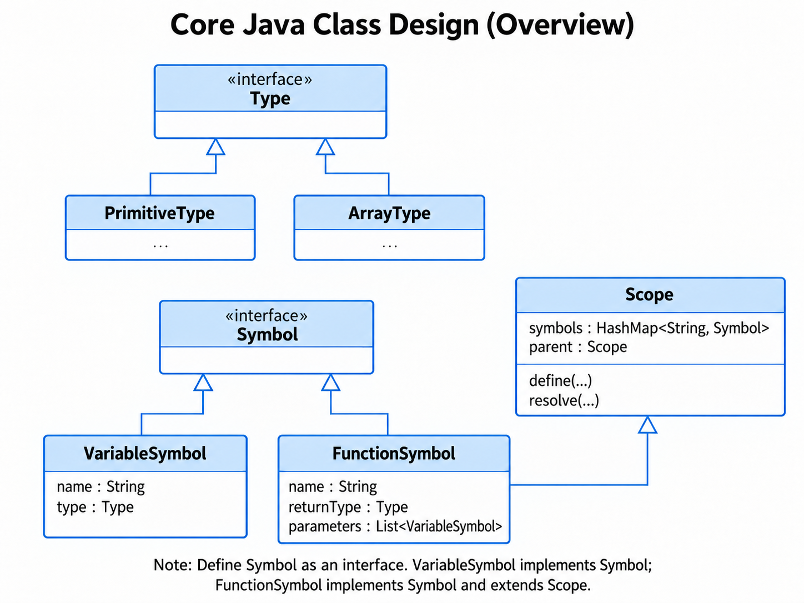
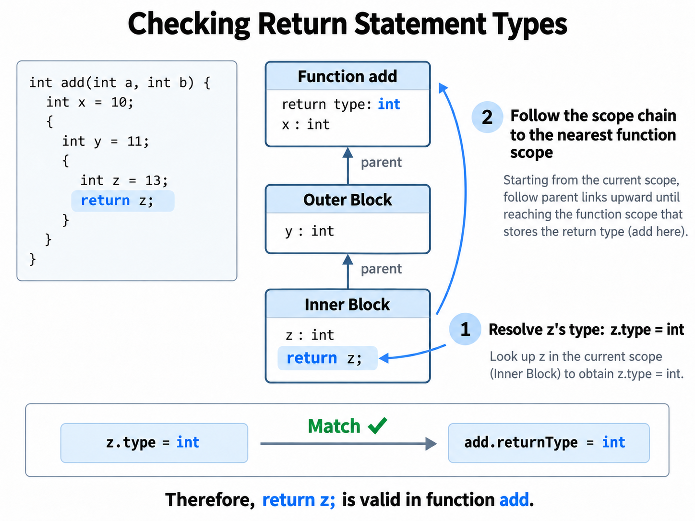

Week 7 - Semantic Part 1 - Symbol Table
At What Levels Do We Need to Check Program Correctness?¶
In the previous two chapters, we covered lexical analysis and syntax analysis in detail. Building on that foundation, this chapter examines whether a program is correct from a semantic perspective. Starting this week, the labs may move slightly ahead of the lectures. This is because syntax and semantic analysis involve a substantial amount of theory, while implementing them with ANTLR is relatively straightforward. This difference in pace will not interfere with your learning. In fact, gaining hands-on experience before studying the underlying theory can deepen your understanding of compiler techniques.
Recall that during lexical analysis, we only care whether the input program can be correctly split into tokens. If an undefined symbol appears, we need to identify it. During syntax analysis, we check whether the program has a valid grammatical structure. For example, does each statement end with a semicolon? Does each function call use parentheses?
However, these two checks alone are far from sufficient. Simply put, lexical and syntax analysis ensure that the program looks structurally correct, while semantic analysis ensures that it also makes sense. What does this mean? Consider the following program:
Syntactically, this program is valid: both the function definition and the assignment statements follow the grammar rules. However, you may have already noticed several logical errors:
- The program uses the variable
cwithout defining it first. - The expression
x + yon the right-hand side of the assignment is also invalid becausexandyhave different types, which generally cannot be added directly. - The declared return type of
mainisint, but its final statement returns a value of typeString.
These are all semantic errors. Semantic analysis aims to detect all such problems. It is the final line of defense before we translate a program into an intermediate representation.
Scope is a crucial concept in semantic analysis. A scope defines a variable's visibility: the parts of a program where it can and cannot be accessed. Consider the following example:
int main() {
int x = 10; // x is defined here
{
int y = 5; // y is visible only within this inner pair of braces
int x = 11; // A new x is declared and defined in the inner scope
x = x + y; // x refers to the variable in the inner scope, not the outer x
}
y = y + 1; // ❌ Error: y is no longer in scope
}
In this example:
- We define a new variable with
int x = 11;in a nested scope insidemain. Although it has the same name as the outerx, it is a new, independent variable whose scope is limited to this nested block. Therefore,xinx = x + yrefers to the newly defined variable. This is called variable shadowing. When resolving a variable, we first search the current scope. If it is not found, we move outward through the parent scopes until we find it. In general, variables in a parent scope are visible in its child scopes unless a variable with the same name shadows them. - The scope of
yis limited to the inner braces{...}. Attempting to accessyoutside those braces causes an error becauseyis out of scope.
Let us now review several common kinds of problems that semantic analysis needs to detect.
1. Is a Variable Defined Before It Is Used?¶
Before a variable is used, it must have been declared.
Example (invalid):
2. Is a Variable Defined More Than Once?¶
Declaring variables with the same name more than once in the same scope is usually a semantic error.
Example (invalid):
int main() {
int x = 1;
int x = 2; // ❌ Error: x is defined more than once in the same scope
return 0;
}
3. Do the Types Match? (Type Checking)¶
In assignments and operations, value types must satisfy the requirements of the variable or expression. For example, a string cannot be assigned to an integer variable.
Example (invalid):
4. Are the Operand Types in an Expression Compatible?¶
The operands of an operation must have compatible types. For example, in most statically typed languages, an integer and a string cannot be added directly.
Example (invalid):
int x = 5;
String y = "abc";
int z = x + y; // ❌ Error: addition is not supported for these incompatible types
5. Is a Function Called Correctly?¶
A function call must satisfy the requirements of the function definition:
- Does the function name exist?
- Does the number of arguments match?
- Do the argument types match?
Example (invalid):
int add(int a, int b) {
return a + b;
}
int main() {
int x = add(1); // ❌ Error: incorrect number of arguments
return 0;
}
6. Does a Return Value Match the Function's Declared Return Type?¶
The type of the value returned by a function must match its declared return type. A
voidfunction cannot return a value, while a non-voidfunction must return a value of the appropriate type.
Example (invalid):
7. Are the Scope Rules Followed Correctly?¶
A variable can only be accessed within its scope. Once execution leaves that scope, the variable is no longer accessible.
Example (invalid):
Symbol Tables¶
Now that we know what semantic analysis needs to do, the next question is how to implement these checks. Let us start with the simplest rule:
Is a variable defined before it is used?
To check this, whenever the parser encounters a variable definition, it must record information about the variable in a table. Later, when a statement uses that variable, we can look it up in the table to determine whether it has been defined. If it is found, the variable has been defined and can be used. Otherwise, it is undefined, and we should report an error.
What information should this table store? Is the variable name enough? If all we want to check is whether a variable has been defined, its name may seem sufficient. But consider another rule: Do the types match? In this case, the name alone is not enough. We must also record the variable's type so that we can compare it during type checking.
Similarly, function definitions must be recorded. By storing function information in the table, we can determine whether a function exists when we encounter a call to it. To verify that the call is valid, we must also record the function's parameter list, including the types and number of parameters, as well as its return type.

Next, we must consider scopes. A program contains multiple scopes, which may be nested (parent and child) or at the same level (siblings). We can naturally represent this hierarchy as a tree, where each scope node contains the variables and functions defined in that scope. One detail to keep in mind is that a function itself also forms a scope.

In this model, each scope can be viewed as a separate table. The variables and functions recorded in it are collectively called symbols. The hierarchy formed by these scope tables is collectively called a symbol table.
You should now have a basic understanding of symbol tables. Next, we will explore how to implement one step by step in Java.
We begin with the most basic building block: the symbol.
Suppose our language has two main kinds of symbols: variables and functions. We can define VariableSymbol and FunctionSymbol to represent them. Although they represent different program entities, they share some properties. For example, both need a name, and both have type information relevant to type checking.
We can therefore start by defining a Symbol interface that describes the basic capabilities shared by all symbols:
For a VariableSymbol, getType() returns the variable's type. For a FunctionSymbol, it returns the function's return type.
To represent different kinds of types uniformly, we can also define a Type interface and have concrete types such as PrimitiveType and ArrayType implement it. For example:
This allows us to represent a variable's type using Type, whether it is int, float, or an array type.
The structure of VariableSymbol is therefore simple: it only needs to store the variable's name and type.
public class VariableSymbol implements Symbol {
private final String name;
private final Type type;
// ...
}
In contrast, FunctionSymbol must also record the function's parameter list. Since each parameter is itself a variable, we can represent the parameters directly using List<VariableSymbol>:
Next, let us define Scope.
A scope's main responsibility is to keep track of the symbols accessible within it. A Scope therefore needs a mapping from symbol names to symbol objects. For example, we can use a HashMap:
Using symbol names as keys allows us to define and look up symbols efficiently.
One Map or Multiple Maps?
If our language does not allow a variable and a function to have the same name in the same scope, a single Map<String, Symbol> is sufficient.
If the language places variable names and function names in separate namespaces, we can instead maintain separate maps:
The choice depends on the semantic rules of the language.
In addition to storing symbols, each scope needs a reference to its parent scope:
If a symbol does not exist in the current scope, we can then follow parent to continue searching in the enclosing scopes.
At a minimum, Scope therefore needs to provide two core operations:
- Define a symbol (
define): Add a new symbol to the current scope. Before doing so, check whether a symbol with the same name already exists in the current scope to detect redefinitions. - Resolve a symbol (
resolve): Search the current scope first. If the symbol is not found, followparentoutward until the symbol is found or the outermost root scope is reached.
For example:
public Symbol resolve(String name) {
Symbol symbol = symbols.get(name);
if (symbol != null) {
return symbol;
}
if (parent != null) {
return parent.resolve(name);
}
return null;
}
In addition to ordinary block scopes, a function is also a special kind of scope.
A function has two distinct roles:
- From the outside, its name can be referenced by other expressions, so it is a Symbol.
- From the inside, it can contain parameters, local variables, and nested block scopes, so it is also a Scope.
In Java, we can therefore make FunctionSymbol extend Scope and implement the Symbol interface:
public class FunctionSymbol extends Scope implements Symbol {
private final String name;
private final Type returnType;
private final List<VariableSymbol> parameters;
// ...
}
A function can thus naturally serve as both a symbol and a scope.
For example, consider:
We can represent its scope structure as follows:
Here, add is defined as a function symbol in Global Scope. At the same time, FunctionSymbol(add) acts as a scope that stores parameters a and b and local variable x.

Finally, let us consider a specific problem: how can we check whether a return statement matches the function's return type?
Consider the following program:
When the semantic analyzer visits:
it needs to perform two tasks.
First, we need to determine the type of the expression z. We are currently in the innermost block scope, so we look up z in that scope and obtain:
Next, we need to determine which function contains this return statement.
There is no need for VariableSymbol z to store which function it belongs to. While traversing the parse tree, the semantic analyzer can maintain the current scope (currentScope). We simply start from that scope and follow parent outward:
We continue until we encounter a FunctionSymbol:
Scope scope = currentScope;
while (scope != null) {
if (scope instanceof FunctionSymbol function) {
// Found the function containing the current return statement
break;
}
scope = scope.getParent();
}
Because FunctionSymbol extends Scope, it naturally appears in the scope chain.
At this point, we know:
Comparing the two completes the type check for the return statement.
This design has an important benefit: symbols describe program entities, scopes describe where names are visible, and the semantic analyzer keeps track of the current scope. Keeping these responsibilities separate makes the implementation clearer.

This outlines the approach to implementing a simple symbol table. You can use these ideas to build your own. In the next section, we will explain how to use the symbol table together with the parse tree.
Exercises¶
We are implementing an interpreter for a simple scripting language called SPLC. The language supports variable definitions, function definitions, and nested scopes. Variable lookup follows this rule:
Start in the current scope. If the variable is not found, follow the parent links outward, one scope at a time, until the root scope is reached. If the variable cannot be found anywhere in the scope chain, it is undeclared.
Building on the lexical and syntax analysis from the previous stage, using the ANTLR-generated SplcParser, this lab implements a symbol table and three kinds of static semantic checks.
1. Source Code Repository¶
2. Language Subset and Task Scope¶
This exercise does not cover the following:
- Control-flow statements such as
ifandwhile. - Semantic checks for array types (
ArrayType). - Checking whether a return value matches the function's return type (
# ReturnStmt). - Additional
{ ... }compound statement blocks inside function bodies (# CombineStmt).
Part A: Complete Scope.java¶
Complete Scope.java and pass all the test cases in ScopeCheck.
Part B: Complete Lab6Visitor to Perform Semantic Analysis¶
1. Source Locations and Error Output Format
Print each error on a separate line in the following format:
- Line numbers start at 1 (
Token.getLine()). - Column numbers start at 0 (
Token.getCharPositionInLine()) and indicate the position of the identifier's first character . The leftmost column is 0.
2. Three Required Checks
| Check | Trigger | Output |
|---|---|---|
| Variable redefinition | Variables with the same name appear in the same scope, including a local variable with the same name as a parameter | L:C: error: Redefinition of 'name' |
| Undeclared use | An identifier cannot be resolved along the scope chain | L:C: error: Undeclared use of 'name' |
| Function redeclaration | Functions with the same name appear in the same scope | L:C: error: Redeclaration of 'name' |
3. Output When There Are No Errors
If the program has no semantic errors , collect and print its global variables and global function signatures in declaration order. Do not print local variables or parameters separately. Print each variable and each function on its own line:
Variables:
<variable name>: <type>
...
Functions:
<function name>: <return type>(<parameter type list>)
Test Cases¶
The provided tests do not cover the following features. You may practice implementing them on your own if you are interested:
ifstatements andwhileloops.- Array types.
- Return-type checks (
# ReturnStmt). {}compound statements (# CombineStmt).- Evaluating the results of arithmetic operations.
Test 1: Global Variable Redefinition
Output:
Test 2: Function Redeclaration
int my_func(int a){}
int my_func2(char b){}
int my_func(int a, int b){}
int main() {
return 0;
}
char my_func2(int x){}
Output:
Test 3: Duplicate Parameters and Local Variables with the Same Names as Parameters
Output:
Test 4: Use Before Declaration
Output:
Test 5: Valid Program
Output: